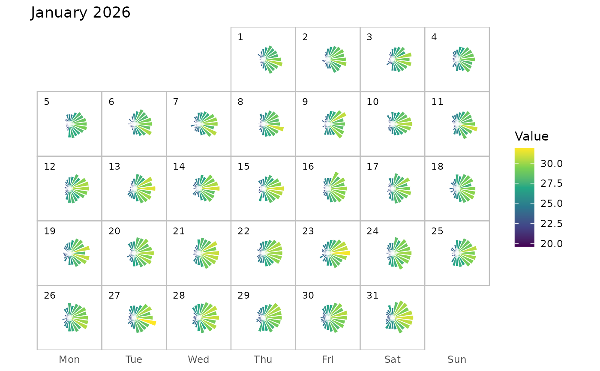

Creates a monthly calendar visualization in which each calendar day contains a 24-hour polar bar chart. Each bar represents one hour of the day, with the angular position corresponding to the hour and the bar length and colour representing the observed value.
Usage
calendar_hourly_polar(
data,
datetime,
value,
month = NULL,
radius = 0.35,
bar_width = 0.85,
cell_width = 1,
cell_height = 1
)Arguments
- data
A data frame containing the hourly observations.
- datetime
A date-time column containing the observation times.
- value
A numeric column containing the values to be visualized.
- month
A date or character value specifying the month to plot. For example,
"2026-01-01". IfNULL, the month containing the earliest observation is used.- radius
Numeric. Maximum radius of the hourly bars within each calendar cell. Defaults to
0.35.- bar_width
Numeric between 0 and 1. Controls the angular width of each hourly bar relative to the 24-hour sector. Defaults to
0.85.- cell_width
Numeric. Width of each calendar cell. Defaults to
1.- cell_height
Numeric. Height of each calendar cell. Defaults to
1.
Details
Missing hourly observations are retained in the calendar but are not drawn as bars. The calendar is arranged from Monday to Sunday, with each day positioned according to its calendar date.
Each day is represented by a separate polar bar chart containing up to 24 bars. Hour 0 starts at the top of the circle and the hours proceed clockwise through hour 23.
The bar length is scaled according to the range of the observed values in the selected month, while colour represents the original value. Missing hourly observations are left blank.
The function is useful for examining intraday patterns while retaining the context of the calendar. For example, daily temperature, air quality, electricity demand, traffic, or other regularly recorded hourly measurements can be displayed.
Examples
set.seed(123)
hourly_data <- tibble::tibble(
datetime = seq(
from = as.POSIXct("2026-01-01 00:00"),
to = as.POSIXct("2026-01-31 23:00"),
by = "hour"
)
) |>
dplyr::mutate(
hour = lubridate::hour(datetime),
day = lubridate::day(datetime),
temperature =
25 +
4 * sin(2 * pi * hour / 24) +
0.05 * day +
stats::rnorm(length(datetime), 0, 0.8)
)
calendar_hourly_polar(
hourly_data,
datetime,
temperature,
month = "2026-01-01"
)
